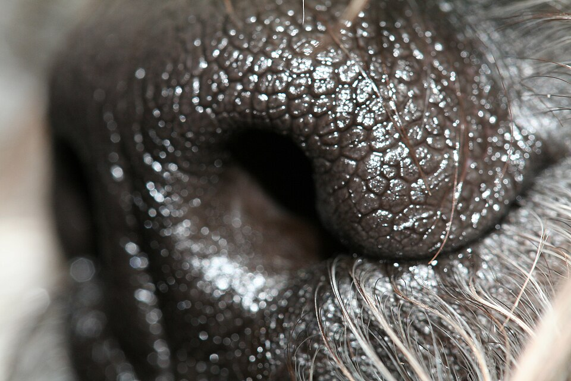
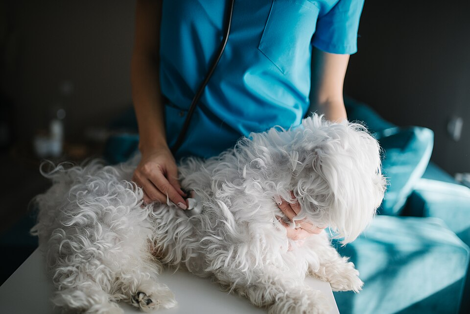
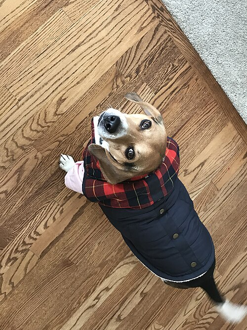
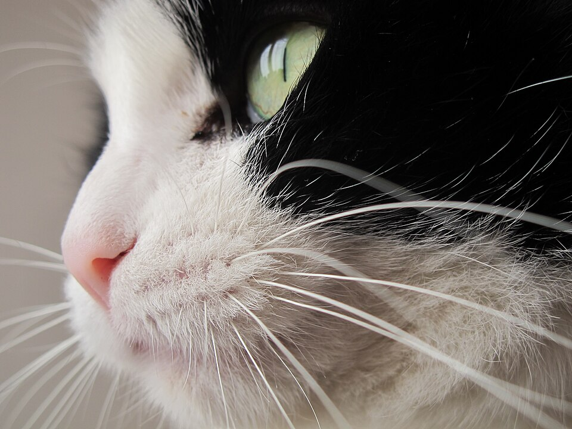
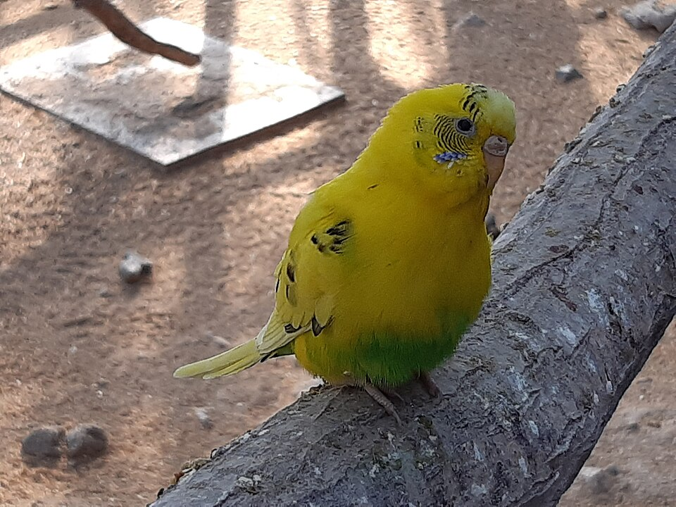
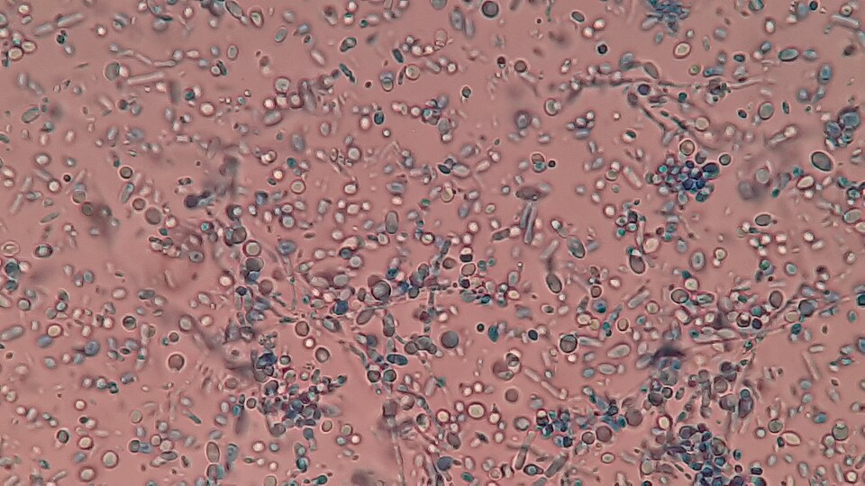
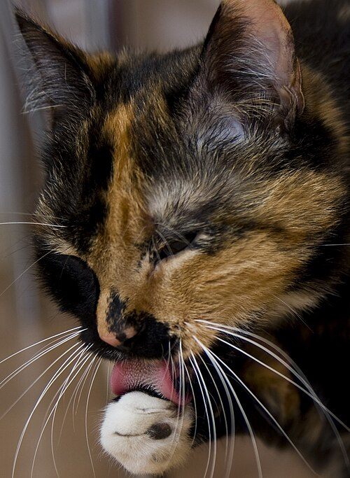
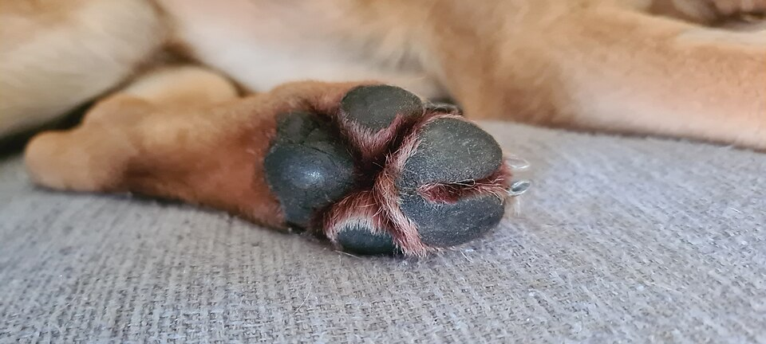
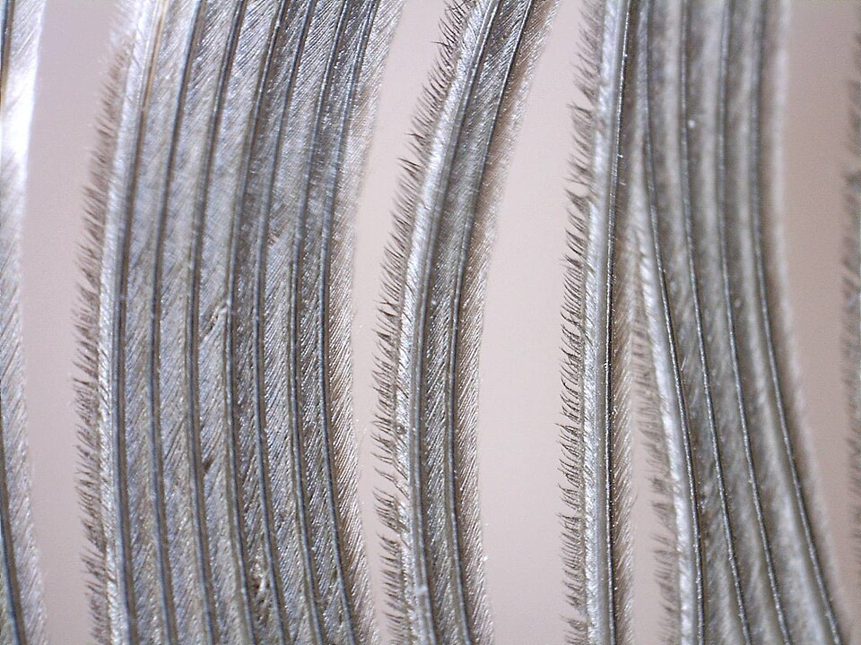
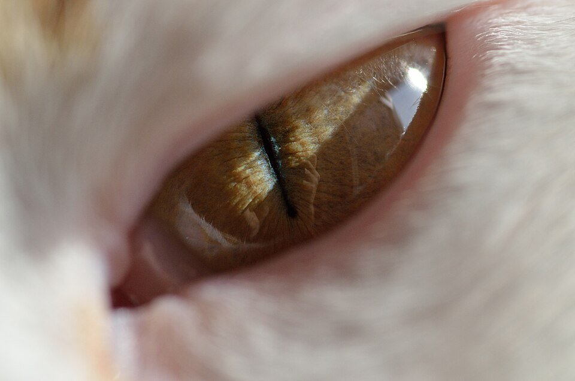

300 milhões de receptores de cheiro
Nariz de cachorro
Nós temos cerca de 6 milhões. Por isso o perfume do banho é suave, e só vai se você quiser.
Pet shop no Jardim Aquarius · desde 2005
Centro de estética com banho de ozônio, veterinário, rações e comida natural, produtos orgânicos e veganos, roupas, acessórios e arranhadores. Para cães, gatos e aves.


A loja
Do banho à ração, do arranhador à roupinha de frio. E, se você mora no Jardim Aquarius, rações e medicamentos chegam até a sua porta.

Tosa na máquina ou na tesoura, tosa higiênica, corte de unhas e retirada de nós, com câmeras em toda a área de banho.
Agendar no WhatsApp
Atendimento veterinário e farmácia pet no mesmo lugar do banho.

Rações, petiscos, comida natural e produtos orgânicos e veganos.




Pediu pelo WhatsApp, a ração e o remédio chegam em casa.


Banho e tosa
O ozônio dissolvido na água tem ação bactericida. O pelo sai macio, fácil de pentear, e a pele fica protegida. Quem tem alergia sente a diferença.
Você escolhe o dia e conta como seu pet é: idade, medos, alergias.
Tosa higiênica? Perfume? Laço ou gravatinha? A gente pergunta tudo antes.
Água ozonizada, secagem e escovação, com câmeras em toda a área de banho.
Avisamos quando está pronto e se o pelo precisou de retirada de nós.
Ciência pet
Passe a lupa nas fotos. Cada detalhe explica um cuidado que a gente tem no banho, na ração e nos acessórios.

300 milhões de receptores de cheiro
Nós temos cerca de 6 milhões. Por isso o perfume do banho é suave, e só vai se você quiser.

Malassezia ao microscópio
Essa levedura vive na pele do cão. Em excesso, causa coceira, oleosidade e cheiro forte. O banho de ozônio ajuda a manter o equilíbrio.

Língua com ganchinhos
As papilas da língua são de queratina e apontam para trás, como um pente. Os pelos soltos são engolidos, então escova e ração para bolas de pelo ajudam.

7 segundos de teste no asfalto
As almofadas têm glândulas de suor e queimam fácil. Encoste o dorso da mão no chão: se não aguentar 7 segundos, está quente demais para passear.

Penas que fecham como velcro
As bárbulas têm ganchos microscópicos que se encaixam. E o periquito enxerga ultravioleta: vê cores nas penas que nós não vemos.

Pupila em fenda
A pupila abre muito à noite, e uma camada atrás da retina reflete a luz. Por isso ele adora brinquedos para caçar ao entardecer.
Desde 2005
 Tutu
Tutu Cristal
Cristal

Avaliações
153 avaliações no Google
 94% recomendam no Facebook
94% recomendam no Facebook
Levei minha Dadá para tomar banho e só tenho elogios. Perguntaram como gostaria do banho, se precisava de tosa higiênica, se deveriam colocar perfume. Há câmeras que pegam todo o espaço do banho, o que gera muita segurança.
Adoramos o carinho, a atenção e o cuidado com a nossa pet de 9 anos e meio, medrosa e sensível. Banho e tosa perfeitos com todos os cuidados de uma idosa alérgica.
Minha idosinha ama este lugar, lá ela é tratada com muito carinho e respeito. O banho de ozônio foi ótimo para a pele dela, melhorando muito as alergias.
Já levei meus 2 cachorros em vários pets e sempre acabo voltando para a Pet Hall. Profissionais competentes, e o banho dura bastante: ficam cheirosos por mais de uma semana!
Visite
No térreo do Edifício Terraço Aquarius, Parque Residencial Aquarius, São José dos Campos.
Edifício Terraço Aquarius · R. das Carpas, 60
Parque Residencial Aquarius, São José dos Campos – SP, 12246-292
| Terça-feira | 08:00 – 18:30 |
|---|---|
| Quarta-feira | 08:00 – 18:30 |
| Quinta-feira | 08:00 – 18:30 |
| Sexta-feira | 08:00 – 18:30 |
| Sábado | 08:00 – 18:00 |
| Domingo | Fechado |
| Segunda-feira | Fechado |
Agende pelo WhatsApp e acompanhe os pets que saem daqui nas redes do Pet Hall.